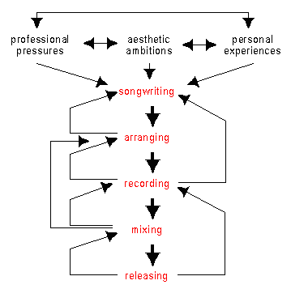
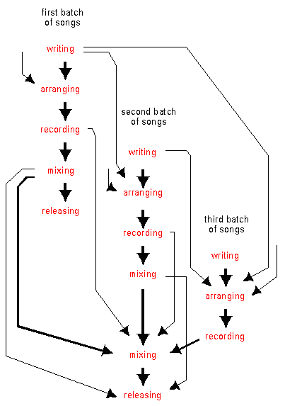

Songwriting, recording, and style change |
||||||||||||||||||||||||||||||||||||||||||||||||||||||||||||||||||
| Problems in the chronology and periodization of the musical style of the Beatles |
||||||||||||||||||||||||||||||||||||||||||||||||||||||||||||||||||
| by Yrjö Heinonen and Tuomas Eerola | ||||||||||||||||||||||||||||||||||||||||||||||||||||||||||||||||||
|
|
||||||||||||||||||||||||||||||||||||||||||||||||||||||||||||||||||
| In the Beatles' songs one can notice some remarkable style changes. To analyse these, however, one first has to solve the problem of the periodization. Yrjö Heinonen and Tuomas Eerola argue the solution lies in dividing the work of the Beatles into twelve recording projects. Using this intermediate level between song and period a more reliable picture of the change of the musical style of the Beatles can be obtained. | ||||||||||||||||||||||||||||||||||||||||||||||||||||||||||||||||||
|
|
||||||||||||||||||||||||||||||||||||||||||||||||||||||||||||||||||
| 1 | Problems of periodization. Our aim here is to discuss the problems in chronology and periodization as regards measuring the stylistic development of the Beatles. The recording career of the Beatles lasted for more than eight years, epitomizing British rock in the sixties. The development of the career of the group is most usually divided into three style periods. Different authors divide the periods otherwise similarly but disagree on the years or albums where the borders are drawn. Heinonen (1994) has suggested the following periodization:
|
|||||||||||||||||||||||||||||||||||||||||||||||||||||||||||||||||
| The above periodization is conceivably the most common in literature. It is endorsed by a wide range of authors and encyclopaedias. [1] Most accounts take the British single and album releases (plus the Long Tall Sally and Magical Mystery Tour EPs) as the basis of the chronology. This is, in principle, well in line with the Dahlhausian concept of presenting music history as a narrative, which takes the musical 'work' as the unit of the chronology. According to Dahlhaus (1982), the resulting narrative should consist of musical works arranged in a chronological order according to the novelty principle (that is, according to the date of the premiere or publishing of the work). | ||||||||||||||||||||||||||||||||||||||||||||||||||||||||||||||||||
| With respect to the Beatles, this is problematic for at least two reasons: (1) the concept of the "work" is problematic in the context of popular music, and (2) the fact that the chronology based on the British single and album releases is in conflict with the novelty principle, since a considerable amount of songs were first released by Capitol in the United States of America. Substituting the concept of the "work" with the concept of "record" seems reasonable enough. The problem regarding the novelty principle seems at the first glance to be more problematic. This is apparent in the chronology of all records the Beatles officially released during 1962-70 in Britain and America (Appendix 1). What is also clear in the chronology is that the first releases of the songs cover but a minority of all releases. | ||||||||||||||||||||||||||||||||||||||||||||||||||||||||||||||||||
The core of the problem seems to lie in whether one wishes to emphasize the change in the musical style of the Beatles, the divergent release policies of the recording companies, or the overall reception of the music of the Beatles. Here the emphasis is in the change in the musical style. The plan of the article comprises a brief survey on the following issues:
|
||||||||||||||||||||||||||||||||||||||||||||||||||||||||||||||||||
| The authors suggest that the process-oriented approach, emphasizing the songwriting and recording process, provides a more reliable basis for measuring style change than the outcome-oriented approach, in which the emphasis is on the releases. | ||||||||||||||||||||||||||||||||||||||||||||||||||||||||||||||||||
| 2 | Previous accounts of the stylistic change of the Beatles. There are some more or less complete and systematic accounts approaching the output of the Beatles from the point of view of style change. These include Wilfrid Mellers' The Beatles in Retrospect (1973), Stephen Clark Porter's Rhythm and Harmony in the Music of the Beatles (1979), Tim Riley's Tell Me Why (1988), William J. Dowlding's Beatlesongs (1989), Steve Turner's A Hard Day's Write (1994), and Ian MacDonald's Revolutions in the Head (1994). | |||||||||||||||||||||||||||||||||||||||||||||||||||||||||||||||||
| Wilfrid Mellers' Beatles in Retrospect (1973) is one of the first style-analytical studies of the music of the Beatles. Mellers does not try to write a complete chronological narrative of the songs and records of the Beatles. Rather he picks out the records he regards as most important. These records consist mainly of albums — not all of them since Yellow Submarine is omitted —, a couple of singles ("Strawberry Fields Forever" / "Penny Lane" and "All You Need Is Love" / "Baby You're Rich Man"), and one EP (Magical Mystery Tour). Mellers does not discuss the albums in the order in which they were released either. This is because he perceives a logical stylistic evolution from Revolver through Sgt. Pepper's and Magical Mystery Tour to Abbey Road, disrupted by the White Album and Let It Be, and chooses to discuss the albums in this particular order. Mellers states that the Beatles could not repeat the "personal-cum-mythical" statement they made in Sgt. Pepper's, nor could they proceed to Abbey Road "without surrendering their 'corporate identity'," that is, without pursuing separate paths. | ||||||||||||||||||||||||||||||||||||||||||||||||||||||||||||||||||
| In his Rhythm and Harmony in the Music of the Beatles (1979) Stephen Clark Porter performs a statistical analysis of some stylistic features representing primarily the parameters of rhythm, melody, and harmony. Porter's study is then a precursor of the recent study of Tuomas Eerola (1997; 1998). Porter's selection is neither complete nor chronological. Two important American album releases are missing from Porter's list: Something New (1964) and "Yesterday" ... and Today (1966). Moreover, by selecting the British releases of Help! and Rubber Soul, omitting "Yesterday" ... and Today, and selecting the American release of Revolver, Porter happens to omit songs like "Day Tripper", "We Can Work It Out", "Doctor Robert", "And Your Bird Can Sing", and "I'm Only Sleeping" altogether. All these songs were released on "Yesterday" ... and Today and all of them beautifully reflect the transitory feel of the 1965-66, period. | ||||||||||||||||||||||||||||||||||||||||||||||||||||||||||||||||||
| Taking the "inauthentic" American album releases as primary "texts" is not only problematic but simply misleading if the intention is to explain stylistic change in the music of the Beatles. This is due to the different chronology and different contents of the albums. Porter's choice might, however, have been relevant if the focus of his study had been the changing release policies of American recording companies (particularly that of Capitol) or the reception of the albums of the Beatles in America. Further, omitting the single releases and two important American album releases — with simultaneous substituting of two important American issues (Help! and Rubber Soul with related but far from identical British releases — makes the problems of the study still more severe. This choice — it is not clear whether this was a really choice at all or a mere accident — finally blurs the chronology and at the same time excludes many important songs. These inaccuracies regarding the chronology and completeness of the selection make Porter's account simply misleading. | ||||||||||||||||||||||||||||||||||||||||||||||||||||||||||||||||||
| Tim Riley's discussion in Tell Me Why (1988) is based on British releases and he presents a "selected discography that omits unnecessary repetitions (such as singles and EPs that draw their material from albums)." That is, Riley's account is complete in the sense that it comprises all songs officially released by the Beatles in England during 1962-70. Riley also seeks to be faithful to the original chronology (of the British releases). He also relates the "odd" singles and EPs — that is, singles and EPs containing songs not released on any album — to adjacent albums. Actually, instead of albums, Riley takes what is below called a recording project as the basic unit of his discussion. | ||||||||||||||||||||||||||||||||||||||||||||||||||||||||||||||||||
| Riley's faithfulness to the original chronology goes so far that he makes two deviations concerning the order in which he presents the records: the Yellow Submarine album is discussed between the Magical Mystery Tour EP and the "Lady Madonna" / "The inner Light" single; and the Let It Be album is discussed between The Beatles (White Album) and the "Get Back" / "Don't Let Me Down" single. Both deviations are based on the recording chronology instead of the release chronology. Basically similar divisions — with more or less similar deviations — have been presented by Dowlding (1989) and Turner (1995). | ||||||||||||||||||||||||||||||||||||||||||||||||||||||||||||||||||
Ian MacDonald's Revolutions in the Head (1994) is based on the official EMI discography and treats each record in order of recording — that is, "in the order in which they were commenced in the studio". MacDonald takes a song as the basic unit of discussion. The principle of a life-span type of stylistic development is apparent throughout the book. This is most apparent in the way MacDonald divides his book into three parts:
|
||||||||||||||||||||||||||||||||||||||||||||||||||||||||||||||||||
| This division clearly implies a rise-and-fall type of conception as to the stylistic development of the Beatles. MacDonald's account differs from all other accounts referred to above in at least four senses. Firstly, it takes songs as the unit of discussion (instead of albums or recording projects. Secondly, it is consistently chronological (the chronology is based on the order of recording). Thirdly, there is no intermediate levels — like albums or recording projects — between the elementary unit of analysis (a song) and large-scale periods (going up, the top, coming down). Finally, as a result of the previous three aspects, it is clearly process-oriented rather than outcome-oriented as most of the other accounts have been. What is, then, the process behind the outcome like? | ||||||||||||||||||||||||||||||||||||||||||||||||||||||||||||||||||
| 3 | The songwriting and recording process of the Beatles. The following is a rough outline of what a "typical" songwriting and recording process of the Beatles was like. It is a brief summary of the work done by Heinonen during the last five years or so on this topic (Heinonen 1994 and 1995 are two earlier attempts to tackle the topic). The term 'typical' is to be understood in the sense used in modern prototype theory. That is, the 'typical songwriting and recording process of the Beatles' does not mean that most Lennon-McCartney songs were written and recorded according to one and same formula. | |||||||||||||||||||||||||||||||||||||||||||||||||||||||||||||||||
| The prototype theory states that the structure of categories (concepts) like, for example, "the songwriting process" — is heterogeneous according to the degree of their typicality. A category consists of the prototype (the clearest cases or best examples) and less prototypical members, which can — at least in theory — be ordered according to how well they represent the category. The prototype represents the highest degree of 'memberness' and thus it is also the most representative member of the category. Members close to the prototype are interpreted as belonging to the category without problems, whereas the ones resembling the prototype more remotely often cause problems. It is, however, sufficient that an object share only certain features of the prototype. | ||||||||||||||||||||||||||||||||||||||||||||||||||||||||||||||||||
The members of a category are associated with another according to the principle of family resemblance in such a way that the prototype forms the center or core of the category (Heinonen 1994 and 1995, Rautio 1993, Rosch 1973, Rosch & Mervis 1975, Fuhrman 1988, and Gardner 1983). On this basis, it is assumed that:
|
||||||||||||||||||||||||||||||||||||||||||||||||||||||||||||||||||
| With respect to the third assumption, the degree the deviations depended on different contextual factors — the songwriter, division of labor, style period, compositional situation, stage of the compositional process and so on must be taken into account. | ||||||||||||||||||||||||||||||||||||||||||||||||||||||||||||||||||
| 4 | Individual songs. Figure 1 shows what is meant by the songwriting and recording process of individual songs in this article. The process itself consists of five main stages: (1) songwriting, (2) arranging, (3) recording, (4) mixing, and (5) releasing. Usually the order of the stages is as described in Figure 1, but they always overlap to some degree. It is also typical that the process returns to a previous stage before proceeding further. Returning two stages backwards — from recording back to songwriting, from mixing back to arranging, or from releasing back to recording — is not uncommon, either. | |||||||||||||||||||||||||||||||||||||||||||||||||||||||||||||||||
 |
||||||||||||||||||||||||||||||||||||||||||||||||||||||||||||||||||
| Figure 1: The main stages and sources of inspiration in the typical writing and recording process of an individual song |
||||||||||||||||||||||||||||||||||||||||||||||||||||||||||||||||||
| Sometimes the stages may follow each other almost without a perceivable gap, and in such cases distinguishing them from each other may be difficult and even artificial. On the other hand, the writing process may be stopped at a certain stage for days, weeks, months, or even years. Individual stages may be linked with each other in different ways — usually in such a way that the songwriting process may be clearly separable from the recording process, which, in turn, is clearly separable from the releasing process. Usually arranging is then more closely linked to recording than to songwriting and mixing is more closely linked to releasing than to recording. Figure 1 also shows the three main sources of inspiration. It may be stated that during the early years (1962-65) the professional pressures dominated as the main source of inspiration. During the middle period the significance of both aesthetic ambitions and personal experiences increased as sources of inspiration, at the cost of professional pressures. During the late period, professional pressures dominated again — the aesthetic ambitions were satisfied in the solo releases of the individual members of the Beatles, and also the need for writing about personal experiences decreased. | ||||||||||||||||||||||||||||||||||||||||||||||||||||||||||||||||||
| It should be taken into account that during the last two stages (mixing and releasing), individual songs were considered more as parts of a whole — that is, a record — than isolated entities. The writing and recording processes of individual songs to be released on the same record were not independent. Rather, they might be regarded as strands of a rope (the rope representing the writing and recording process of an entire record). Thus, the songwriting and recording process of an individual song cannot be isolated from the writing and recording process of a record — be it a single, an EP, or an album — except theoretically. | ||||||||||||||||||||||||||||||||||||||||||||||||||||||||||||||||||
| 5 | Recording projects. Despite differences between the early, middle, and late periods, the most pervasive reason to write and record songs during each period was the recording contract with the EMI Recording Company. In producer George Martin's words: | |||||||||||||||||||||||||||||||||||||||||||||||||||||||||||||||||
| "Brian Epstein and I worked out a plan in which we tried — not always successfully — to release a new Beatles single every three months and two albums a year. I was always saying to the Beatles 'I want another hit, come on, give me another hit' and they always responded. "From Me To You", "She Loves You", "I Want To Hold Your Hand". Right from the earliest days they never failed" (Lewisohn 1988, 28). | ||||||||||||||||||||||||||||||||||||||||||||||||||||||||||||||||||
| Actually the Beatles succeeded in following Martin's and Epstein's plan only in 1963. Most often — in 1964, 1965, and 1969 — they released two albums and three singles annually: one album plus two singles during the spring and summer, and one album plus one single for the Christmas markets. In 1967 they released one album, three singles and one EP: one album plus two singles during the spring and summer (as usually) but only an EP plus one single for the Christmas markets. In 1966 and 1968 they released only one album and two singles (there were no singles for the Christmas markets). In 1962 only one single was released and in 1970 only one album plus one single. | ||||||||||||||||||||||||||||||||||||||||||||||||||||||||||||||||||
| The release schedule — together with the touring schedule during 1962-66 — resulted in such a practice in which the songs released each year were written, arranged, recorded, mixed and released in two periods, each lasting a few months. On this basis, we take the term 'recording project' to refer to a working period lasting a few months, comprising the writing, arranging, recording, mixing, and releasing of the songs, and resulting in 1-2 singles and one album — plus occasionally one EP — of new material. Usually the Beatles had two projects per year. As a result of the first project, usually 1-2 singles and one album were released during the spring and/or the summer, whereas the second project resulted in one single and one LP release for the Christmas markets. | ||||||||||||||||||||||||||||||||||||||||||||||||||||||||||||||||||
 |
||||||||||||||||||||||||||||||||||||||||||||||||||||||||||||||||||
| Figure 2: A typical recording project of the Beatles | ||||||||||||||||||||||||||||||||||||||||||||||||||||||||||||||||||
Recording projects usually comprised two or three overlapping stages, as shown in Figure 2. The first stage outlined the general stylistic expression of the album. It often comprised the following phases:
|
||||||||||||||||||||||||||||||||||||||||||||||||||||||||||||||||||
The second stage typically strengthened the general expression of the album but also widened its stylistic spectrum. During this stage some new songs were usually written, arranged, recorded, and at least tentatively mixed (the second batch of songs). The third stage comprised the following phases:
|
||||||||||||||||||||||||||||||||||||||||||||||||||||||||||||||||||
| The duration and content of these stages varied from one project to the rest. In many cases there were no clear boundaries between adjacent stages, or the second stage seems to be lacking: it may be adjoined to either to the first or the third stage. | ||||||||||||||||||||||||||||||||||||||||||||||||||||||||||||||||||
| Back to the problems of chronology and periodization. In most of the above accounts of the stylistic change of the Beatles the unit of discussion has been a record — a single or an album, sometimes an EP — and the chronology has been based on the order of release of the records. Many authors have preferred taking also the recording order into account, which has led to ad hoc modifications and eventually blurred the chronology. The authors of this paper suggest that a reasonably reliable chronology and periodization of the output of the Beatles might be built by taking the songs as the elementary units of the chronology and the recording projects as the basic level at which the style change is perceivable. More general periodizations can be built by analyzing the differences between the distribution of relevant musical features in subsequent recording projects. | ||||||||||||||||||||||||||||||||||||||||||||||||||||||||||||||||||
| 6 | Chronology and periodization revisited. A compromise between the problems concerning the chronology and periodization has been presented recently by Tuomas Eerola (1997). Eerola's aim was to establish a division that would be as close as possible to the "pure" chronological division (with time units of equal length), keeping at the same time the albums as the units of division. It is obvious that the songwriting itself does not exactly follow any standard interval, whereas the release dates of the albums rely on external factors not necessarily reflecting the internal style change. Taking the recording order as the basis for the study seemed appropriate. | |||||||||||||||||||||||||||||||||||||||||||||||||||||||||||||||||
| The recording career of the Beatles lasted from the fall of 1962 to the beginning of 1970. What Eerola discovered was that when this seven-year period is divided by 12 — that is, by the number of the albums —, the result is an interval of approximately seven months. Coincidentally, the recording projects (resulting in an album + 1 or 2 singles) conform quite well to these seven-month periods. The recording projects are shown in Table 1, in which the exceptions to the seven-month norm are marked by an asterisk (*). A detailed recording chronology, organized according to the above recording projects, is given in Appendix 2. When compiling this chronology, Eerola has always used the first recording date of the song when assigning their positions in the chronology. | ||||||||||||||||||||||||||||||||||||||||||||||||||||||||||||||||||
|
||||||||||||||||||||||||||||||||||||||||||||||||||||||||||||||||||
| Table 1: The recording projects according to the modified chronological division by Eerola (1997) |
||||||||||||||||||||||||||||||||||||||||||||||||||||||||||||||||||
| In most cases, it took a couple of days to record a song and the Beatles often worked simultaneously on several songs a day. Re-makes or overdubs made later are not vital to the overall recording chronology. The projects are entitled according to the albums, including also songs released on singles and EPs but not on the particular album released as a result of the project. There are, however, some (7) songs that were released for various reasons considerably later than they were first recorded and thus these songs appear here earlier than in most accounts. | ||||||||||||||||||||||||||||||||||||||||||||||||||||||||||||||||||
This modified chronological division seeks to combine the advantages of using:
|
||||||||||||||||||||||||||||||||||||||||||||||||||||||||||||||||||
| As is emphasized above, songs were usually recorded during one to three days and further overdubs did not necessarily change the overall style of the song very much. So 'the date of taking a song into the recording studio comes in most cases very close to the time when the song took the form it had on the final release. | ||||||||||||||||||||||||||||||||||||||||||||||||||||||||||||||||||
| The date of writing was not as closely connected to the final form — style — of the song. Many songs were written long before they were recorded. Famous examples are songs written during the "early days", that is, before the breakthrough of the Beatles. These songs include "Love Me Do", "I Call Your Name", "One After 909", "I'll Follow The Sun", "When I'm Sixty-Four", "Michelle", "What Goes On". And, as stated above, the date of release does not necessarily mirror the state of the style because much new material could already have been recorded before the release of a certain song. Many songs were indeed released long after they were recorded. These songs include "You Know My Name (Look Up The Number)", "Across The Universe", "All Together Now", "Only A Northern Song", "Hey Bulldog", and "It's All Too Much". In all these cases the date and order of recording is assumed to reflect the style change more faithfully than the date and order of writing or releasing. | ||||||||||||||||||||||||||||||||||||||||||||||||||||||||||||||||||
| One further advantage of taking the date of recording as the basis of the chronology is that it allows the study of the style change within a recording project. It would be a mistake to assume that this development was linear. Quite the contrary: many markedly "revolutionary" songs were taken into the studio as the very first songs ("Tomorrow Never Knows", "Strawberry Fields Forever", "Revolution") or among the very first songs ("Penny Lane", "A Day In The Life") of a particular recording project. These songs strongly outlined the overall expression of the albums or the style periods they represented. Correspondingly — many more "conventional" songs were taken into the studio at the end of a project, partly because there was no time for experimenting, partly because some conventional songs were needed. However, this aspect — as interesting as it is — is beyond the scope of this essay and, thus, remains to be studied more closely in future research. | ||||||||||||||||||||||||||||||||||||||||||||||||||||||||||||||||||
| 7 | Conclusion. Chronology deals with the diachronic aspect of style change. Change as such is a temporal concept but it always takes place with respect to some particular parameters or features that form the synchronic aspect of style change. The following notion of style change comes close to the account of the authors of this paper: | |||||||||||||||||||||||||||||||||||||||||||||||||||||||||||||||||
| "Style is for him [the music historian] a classificatory concept: a style is a set of features, and compositions in that style are compositions that have those features in common. Styles are not fixed and mutually exclusive; they are arbitrary ways of seeing data; they may overlap, and some may wholly contain others. But a stylistic category, once it has been set up, can function as a norm against which data are assessed" (Duckles, 1981). | ||||||||||||||||||||||||||||||||||||||||||||||||||||||||||||||||||
Regarding the musical style as "a set of features" and compositions — songs — as entities having "those features in common" leads also to revisiting the status of the "musical work" as the basic unit of change of a musical style. The authors suggest that measuring style change empirically requires a functional hierarchy of the units of analysis. On the basis of what is presented above, such a hierarchy might comprise the following three levels:
|
||||||||||||||||||||||||||||||||||||||||||||||||||||||||||||||||||
| The authors believe that using the recording dates as the basis of the chronology (the diachronic aspect of periodization) and the above hierarchy as the basis of segmentation (the synchronic aspect of periodization), a more reliable picture of the change of the musical style of the Beatles can be obtained. | ||||||||||||||||||||||||||||||||||||||||||||||||||||||||||||||||||
|
|
||||||||||||||||||||||||||||||||||||||||||||||||||||||||||||||||||
| Notes | ||||||||||||||||||||||||||||||||||||||||||||||||||||||||||||||||||
| 1. Marcus (1992), Lamb & Hamm (1981, 114-117), Cockrell (1986, 171), Larkin (1995, 323-325), Clarke (1989, 85-86), Hardy & Laing (1990, 48-51), and Stuessy (1994, 136), to name but a few. |
||||||||||||||||||||||||||||||||||||||||||||||||||||||||||||||||||
|
|
||||||||||||||||||||||||||||||||||||||||||||||||||||||||||||||||||
| References | ||||||||||||||||||||||||||||||||||||||||||||||||||||||||||||||||||
|
||||||||||||||||||||||||||||||||||||||||||||||||||||||||||||||||||
|
|
||||||||||||||||||||||||||||||||||||||||||||||||||||||||||||||||||
| Originally this essay was published as: Heinonen, Yrjö, and Tuomas Eerola (1998), "Songwriting, recording, and style change. Problems in the chronology and periodization of the musical style of the Beatles." In: Yrjö Heinonen, Tuomas Eerola, Jouni Koskimäki, Terhi Nurmesjärvi and John Richardson (Eds.), Beatlesstudies 1. Songwriting, recording, and style change. Jyväskylä: University of Jyväskylä (Department of Music, Research Reports 19), 1998, 3-32. Like the other volumes of the Beatlestudies series the full book can be ordered at: Bookstore Kampus Kirja, Kauppakatu 9, 40100 Jyväskylä, Finland (e-mail: kirjamyynti@kampusdata.fi). | ||||||||||||||||||||||||||||||||||||||||||||||||||||||||||||||||||
| 2000 © Soundscapes | ||||||||||||||||||||||||||||||||||||||||||||||||||||||||||||||||||